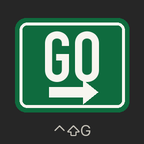
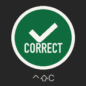
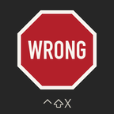
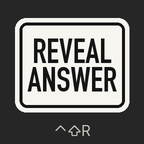
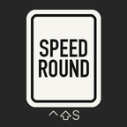
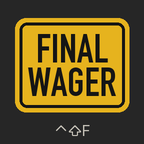

Stream deck layout (5 × 3)
For the VSD Craft deck: 15 buttons on one page, laid out exactly like this grid. Every button sends Ctrl + Shift + a letter. The keys work when the control page or the projector window is in front (on the same computer), and you can also press them by hand.













Download
layout.png (the whole grid) · icons: go.png · correct.png · wrong.png · reopen.png · undo.png · next.png · reveal.png · whole.png · pass.png · speed.png · join.png · final.png · lock.png · tie.png · standings.png


Set up each button in VSD Craft
- Drag the Hotkey action onto the button (it's in the System group).
- Click the hotkey box and press the combination shown above, for example Ctrl + Shift + G for GO. On a Mac that's the Control key, not Command.
- Click the button's icon and choose the matching PNG from this page.
Then click into the control page (or the projector window) once, so the browser is the app in front, and the buttons will run the game.